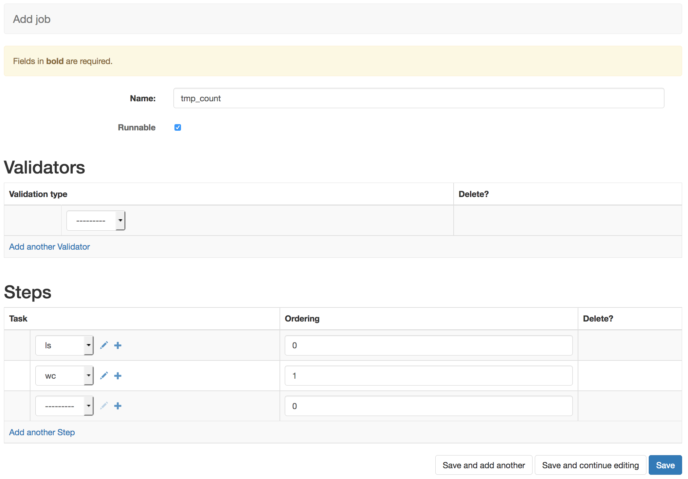

Configuring A Basic Job¶
Here we run through configuring a simple job assuming default queue and validator types. See the admin documentation to configure these.
Backend¶
First we use the Django Admin to navigate to the Backend admin page, http://127.0.0.1:8000/admin/analytics_automated/backend/. Then selecting the ‘+ Add Backend’ option we can configure a newtype of backend We’ll configure a new backend called ‘local1’, with a Queue Type of ‘localhost’ and we leave the root path with the default called ‘/tmp/’.
Hitting save makes this backend configuration available to tasks
There are 4 queue types for different types of execution behaviour. Localhost will run a command as though you are running a binary from a *nix commandline. GridEngine will submit a command to a DRMAA compliant grid engine queue if you have installed and configured this on the machine the workers are running on. R and Python will run chunks of code in those languages directly.
You can define new queue types and set their execution behaviour. If you do this you must restart the Celery workers with that queue type. You may also need to set the LOW and HIGH version of these queue types if you’re managing user load.
Task¶
With a backend configured we can configure some tasks. Navigate to the Task menu, http://127.0.0.1:8000/admin/analytics_automated/task/, and select the ‘+ Add Task’ option.

Our first task will run the unix command ls on the /tmp directory. We give it a name and a useful human readable description. With ‘In Glob’ set to .input the data the user provided to the system will be available in a file ending with the suffix .input. ‘Out Glob’ specifies the files of data that should be gathered up after the command runs and made available to the user. In this case the system will look for a file ending with .contents after the process runs.
Setting the ‘Stdout glob’ tells the system to redirect the command’s std out stream into a file ending with .contents. In this way the output of the command is sent to a file ending in .contents and we’ve told the task to gatther up such files to make them available to the user.
If the backend is a GridEngine or localhost queue types then the executable string is the commandline process that will be executed by the task and sent to stdout. In this case a simple /bin/ls /tmp unix command. Stdout and the captured file will contain the contents of the /tmp directory
If your backend is a Python or R type you can expand the text area and write or paste R or Python code.
We are leaving the Job Termination, parameter and environment options blank in this simple example.
Click save to make this task available
The second task is a task that can consume the data generated by a previous task As before we give the task a simple name and a human readable descriptions. It defines it’s ‘In Glob’ as a file ending with .contents. When this task runs it will search all previous tasks for output files which match this criteria and use those files as input. Once again ‘Out glob’ defines the names of files to be captured so the user can access them and ‘Stdout glob’ is the suffix to use to capture the stdout of our executable string.
The executable string tells the task to run the unix wc command with the -l switch to count the lines in the files. The $I1 control sequence names a file, this refers to the 1st file in the ‘In glob’ field. So in this instance we are asking the task to run wc -l on a file ending with .contents and then capture the output in a file ending .count. We would expect the .count file to now contain the number of lines in the .contents file.
As before we are leaving the Job Termination, parameter and environment options blank in this simple example.
If you return to the http://127.0.0.1:8000/admin/analytics_automated/task/ you can now see a summary of the two tasks available in the system.

One thing to note is that the ‘In Glob’ setting will look for output files in all prior completed tasks, not just the immediate task
Job¶
Now navigate to the Job Admin page, http://127.0.0.1:8000/admin/analytics_automated/job/, and select the ‘+ Add Job’. From here we can configure a job using the tasks that are available in the system.
Here we’ve given the job the name tmp_count as we’re going to use the previous tasks to count the number of files present in the /tmp directory. We’ve selected the ‘Runnable’ option. Jobs which are not Runnable will reject user submissions
This job does not rely on user input data so the validator option is left blank.
Under tasks we select the tasks we wish the job to run and use the ordering to give sequential integer values which define the ordering of the tasks. 0 for our ‘ls /tmp > .contents’ task and 1 for the ‘wc -l .contents’ task.
Now you have configured you’re first simple job in the system. Clicking save will make this job live for users
Endpoints¶
You can now check http://127.0.0.1:8000/analytics_automated/endpoints/ to see what jobs and URLS and parameters are avaialble to users.